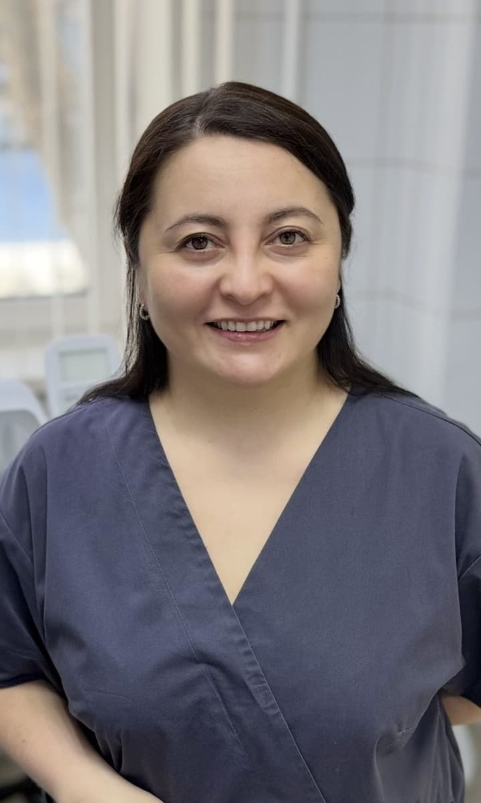
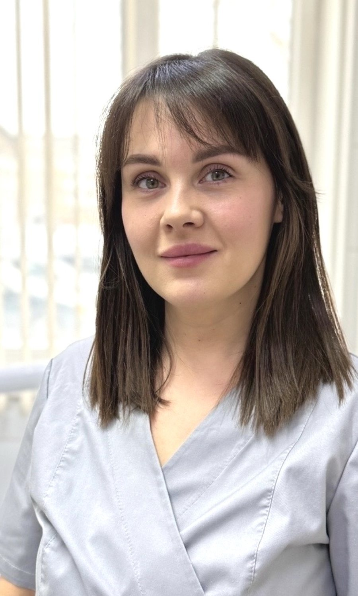
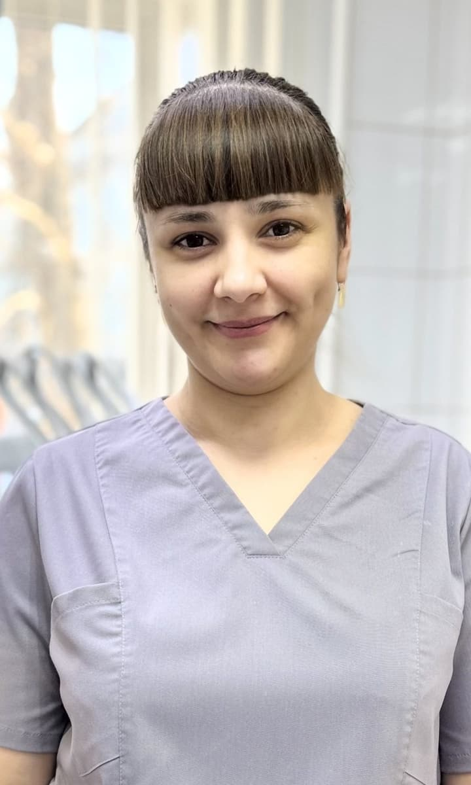

01Идея бренда
«Студия улыбки» — мастерская, где улыбку делают руками и с вниманием, как художник работает над картиной. Это идея старого логотипа (палитра, зубы вместо красок, инструменты вместо кистей), и мы её сохраняем.
Мастерская
Ручная работа, внимание к деталям, без конвейера. Зуб-стакан с инструментами — как стакан с кистями на столе художника.
Честно
План лечения и стоимость — до начала работ. Цены открыты, без «от 1 рубля» и обещаний.
По-соседски
Небольшая клиника в 5-м микрорайоне с 2012 года. Спокойно, тепло, без пафоса сетевых клиник.
02Логотип
Зуб-стакан, из которого торчат зеркало, кисть и зонд; с краёв стекает краска трёх цветов. Название — рукописным шрифтом Caveat. Рабочая версия: чистовик (выверенные пропорции, файлы SVG и PNG для печати) — следующим шагом.
Основной: знак + название в строку. Шапка сайта, вывеска, бланки.
Вертикальный: для квадратных мест — аватарка, визитка, наклейка.
Знак отдельно: иконка сайта, соцсети.
На тёмном: линии светлые.
Одна краска: печать, штамп, вышивка.
Малые размеры: от 24 px — упрощённый знак (без зонда и потёков).
Правила
- Свободное поле вокруг — не меньше ширины ободка стакана.
- Минимальный размер полного логотипа — 120 px по ширине на экране, 30 мм в печати.
- На фото — только на спокойном участке или на плашке цвета «Бумага».
- Цвета — только из палитры ниже.
- Не растягивать, не наклонять, не обводить.
- Не перекрашивать краску в случайные цвета.
- Не добавлять тени, градиенты, свечение.
- Не ставить на пёстрый фон и на лица на фото.
03Цвета
Палитра собрана из трёх источников: синий — цвет сайта и надписи старого логотипа; терракота — кисть нового логотипа (наследник красной улыбки и кисти старого); шалфей, охра и дуб — краски логотипа и настоящий интерьер клиники (зелёная скамья, дубовая стойка, светлые стены).
Основные
Поддерживающие — краски
Нейтральные
Сочетания и контраст
| Пара | Контраст | Где можно |
|---|---|---|
| Белый на синем | 7,3 : 1 | Кнопки, тёмные полосы, любой текст |
| Белый на тёмной терракоте #a8502f | 5,5 : 1 | Кнопки и плашки с текстом |
| Белый на терракоте #c4643f | 4,0 : 1 | Только графика и крупный текст от 24 px — не для мелкого текста |
| Тушь на фоне сайта | 13,6 : 1 | Основной текст |
| Серый текст на фоне сайта | 5,2 : 1 | Подписи, второстепенный текст |
| Тушь на шалфее / охре | 6,3 / 6,8 : 1 | Плашки, иллюстрации с подписями |
Пропорции
Фон и бумага — 80%, тушь — текст, синий — действия и ссылки, терракота — редкие акценты (кисть, отметки, «важное»). Краски — только в логотипе и иллюстрациях, не в интерфейсе.
04Шрифты
Те же шрифты, что на сайте сейчас, плюс рукописный Caveat — только для названия в логотипе. Все три бесплатные (Google Fonts), с кириллицей.
Заголовки, цифры, цены. 500–700.
Сначала план, потом лечение
Основной текст, кнопки, подписи. 400–600.
Перезвоним в рабочее время, подберём удобный день и врача.
Только название в логотипе. Не для текста и заголовков на сайте.
Студия улыбки
| Элемент | Шрифт | Вес | Размер, ноутбук / телефон |
|---|---|---|---|
| Заголовок страницы | Onest | 700 | 56 / 34 px |
| Заголовок раздела | Onest | 700 | 40 / 28 px |
| Подзаголовок | Onest | 600 | 22 / 19 px |
| Основной текст | Manrope | 400 | 17–19 / 16 px |
| Подписи, мелкое | Manrope | 500 | 13–14 px, не меньше 13 |
| Надпись над заголовком | Manrope | 600, заглавные, разрядка 0,14em | 13 px |
05Тон текстов
Говорим как внимательный врач-сосед: спокойно, по делу, на «вы», без медицинского жаргона и рекламных обещаний. Сайт медклиники — это реклама медуслуг (ст. 24 закона «О рекламе»), поэтому часть слов под запретом.
Мы
- Объясняем, что будет и сколько стоит, до начала работ.
- Пишем коротко и конкретно: «Осмотр и план лечения — 350 ₽».
- Признаём, что бывает страшно: «Давно не были? Так бывает у многих».
Не пишем
- «Безболезненно», «гарантия результата», «навсегда».
- «Лучшие врачи», «№ 1 в Ачинске» и другие превосходные степени.
- Отзывы и фото «до/после» без письменного согласия пациента.
- Цены «от 1 ₽» и скидки-приманки.
06Фотографии
Опорный стиль — настоящая клиника. Ниже реальные снимки из материалов клиники: всё, что генерируется, должно выглядеть так, будто снято там же, тем же светом.
Как выглядит клиника на самом деле






Цвета реальных фото
Правила кадра
- Дневной мягкий свет, слегка тёплый; тени мягкие.
- Белые и светло-серые стены, светлый дуб, шалфейно-зелёные акценты.
- Форма врачей серо-лиловая (женщины) или оливковая (мужчины).
- Обычные люди 25–60 лет, славянская внешность, естественная улыбка и зубы.
- Взгляд и жесты — разговор, объяснение, спокойствие.
- Сдержанная цветокоррекция: чуть приглушённые цвета, без перенасыщения.
- Голливудские виниры, неестественно белые зубы, «стоковые» улыбки в камеру.
- Рот крупно, кровь, щипцы, инструменты во рту.
- Синий «медицинский» свет, глянец, неон.
- Надписи, логотипы, вывески других клиник в кадре.
- Выдавать сгенерированных людей за сотрудников клиники.
07Промпты для генерации фото
Базовая часть ставится в начало каждого промпта, затем сюжет, в конце — что исключить. Так все фото получатся в одном стиле. Готовые промпты для конкретных мест сайта — на странице «Фото для сайта».
Основа (в начало)
Photorealistic documentary-style photo in a small modern private dental clinic in a Russian town. White and light warm-grey walls, light oak wood furniture, muted sage-green accents, dark grey dental chair. Soft natural daylight from a window, slightly warm, gentle shadows. Muted, natural color grading, no oversaturation. Staff wear grey-lilac scrubs (women) or olive scrubs (men). Ordinary Slavic-looking people, natural skin and natural teeth. Calm, friendly, honest mood. 35mm lens, shallow depth of field.
Исключить (в конец или в поле negative)
No text, no logos, no signage, no watermarks. No veneers or unnaturally white teeth, no open mouth close-ups, no blood, no forceps, no instruments inside the mouth. No blue clinical lighting, no neon, no glossy stock-photo look, no posed smiles at camera.
Пример сюжета
[Основа] A female dentist sits on a stool and explains a treatment plan on a tablet to an adult female patient in the dental chair; both relaxed, mid-conversation. Subjects in the right third of the frame, calm blurred interior on the left. [Исключить]